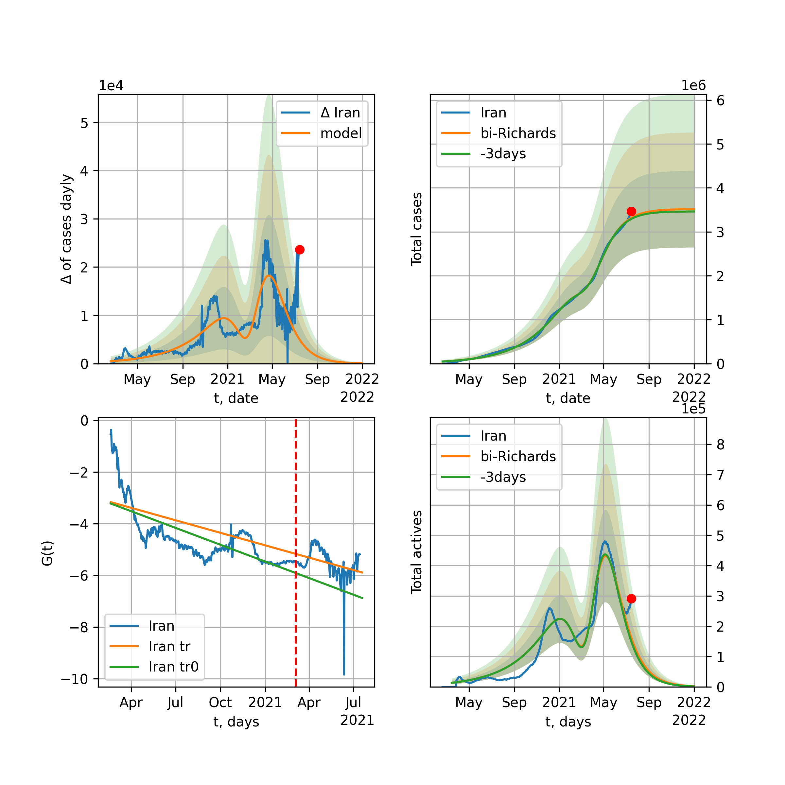

Multi-logistic model of COVID-19 dynamics
Model, code, results
Project maintained by algmaknick Hosted on GitHub Pages — Theme by mattgraham
World

World data at: 2020-06-02
+3 day model MAPE: 0.020227
model: bi-Richards
coeffs: [ 8.96665749e+06 2.91135070e+00 -6.57093099e+01 9.93335866e-03]
S.Korea scenario coeffs: [0.36242246, 2.56241634, 1.84890887, 0.13324732]
rational stdev: 0.253684
forecast at the end of period: +564 days
deltaDaycases: 6366
total cases: 11824536 ± 2999700
total death: 700899 ± 533421
bi-Richards approximation splitting point: 55
trend coefficient of determination: 0.356645
intercept: -1.902628
slope: -0.041472
trend coefficient of determination: 0.904074
intercept: -0.905153
slope: -0.027855
European Union

European Union data at: 2020-06-02
+3 day model MAPE: 0.007311
model: logisticQ
coeffs: [ 1.12083433e+06 4.04851731e-07 3.54190301e+01 -2.52439957e+05]
S.Korea scenario coeffs: [0.35416971, 0.02606324, 4.35859408, 19.30413219]
rational stdev: 0.342042
forecast at the end of period: +144 days
deltaDaycases: 321
total cases: 1511613 ± 517035
total death: 163866 ± 168147
trend coefficient of determination: 0.988204
intercept_: -7.843283353478176
coeffs_: [ 0. -0.26323763 0.0014864 ]
Brazil

Brazil data at: 2020-06-02
+3 day model MAPE: 0.004384
model: logisticQ
coeffs: [ 1.28707129e+06 6.79131715e-06 8.77294682e+01 -1.07007065e+04]
S.Korea scenario coeffs: [0.35416971, 0.02606324, 4.35859408, 19.30413219]
rational stdev: 0.389659
forecast at the end of period: +424 days
deltaDaycases: 166
total cases: 1738396 ± 677381
total death: 97498 ± 113972
trend coefficient of determination: 0.898419
intercept_: -4.447123718278724
coeffs_: [ 0. -0.2558931 0.0014452]

Brazil data at: 2020-06-02
+3 day model MAPE: 0.008757
model: Richards
coeffs: [1.03991509e+07 1.71579216e-01 2.62942806e+01 1.07884818e-01]
S.Korea scenario coeffs: [0.36242246, 2.56241634, 1.84890887, 0.13324732]
rational stdev: 0.337826
forecast at the end of period: +1054 days
deltaDaycases: 1619
total cases: 13902933 ± 4696777
total death: 779752 ± 790262
trend coefficient of determination: 0.228532
intercept: -2.627159
slope: -0.023316
Russia

Russia data at: 2020-06-02
+3 day model MAPE: 0.013869
model: Richards
coeffs: [5.71827893e+05 2.68188583e-01 1.59278560e+01 2.03173229e-01]
S.Korea scenario coeffs: [0.36242246, 2.56241634, 1.84890887, 0.13324732]
rational stdev: 0.059496
forecast at the end of period: +214 days
deltaDaycases: 947
total cases: 718224 ± 42731
total death: 8537 ± 1523
trend coefficient of determination: 0.985347
intercept: -2.848560
slope: -0.052540
USA

USA data at: 2020-06-02
+3 day model MAPE: 0.011900
model: Richards
coeffs: [ 2.16178382e+06 4.38859122e+00 -6.90806482e+01 9.50504967e-03]
S.Korea scenario coeffs: [0.36242246, 2.56241634, 1.84890887, 0.13324732]
rational stdev: 0.358132
forecast at the end of period: +466 days
deltaDaycases: 534
total cases: 2907036 ± 1041103
total death: 166984 ± 179407
trend coefficient of determination: 0.951889
intercept: -1.093076
slope: -0.042427
Spain

Spain data at: 2020-06-02
+3 day model MAPE: 0.001290
model: Richards
coeffs: [ 2.92764392e+05 8.78528315e+00 -5.23614212e+01 6.96061686e-03]
S.Korea scenario coeffs: [0.36242246, 2.56241634, 1.84890887, 0.13324732]
rational stdev: 0.241438
forecast at the end of period: +284 days
deltaDaycases: 124
total cases: 392766 ± 94828
total death: 37122 ± 26887
trend coefficient of determination: 0.956497
intercept: -0.686126
slope: -0.061625
Italy

Italy data at: 2020-06-02
+3 day model MAPE: 0.000946
model: Richards
coeffs: [ 2.36937886e+05 6.39032743e+00 -5.26043934e+01 9.30633882e-03]
S.Korea scenario coeffs: [0.36242246, 2.56241634, 1.84890887, 0.13324732]
rational stdev: 0.072079
forecast at the end of period: +256 days
deltaDaycases: 152
total cases: 314988 ± 22704
total death: 45228 ± 9780
trend coefficient of determination: 0.985903
intercept: -1.080748
slope: -0.057048
United Kingdom

United Kingdom data at: 2020-06-02
+3 day model MAPE: 0.001082
model: Richards
coeffs: [ 3.15589125e+05 3.70144746e+00 -6.02379136e+01 1.26316045e-02]
S.Korea scenario coeffs: [0.36242246, 2.56241634, 1.84890887, 0.13324732]
rational stdev: 0.137358
forecast at the end of period: +354 days
deltaDaycases: 171
total cases: 418753 ± 57519
total death: 59305 ± 24438
trend coefficient of determination: 0.964886
intercept: -1.382527
slope: -0.045897
France

France data at: 2020-06-02
+3 day model MAPE: 0.004852
model: Richards
coeffs: [1.46755416e+05 7.57798651e-01 7.59514612e+00 1.16650309e-01]
S.Korea scenario coeffs: [0.36242246, 2.56241634, 1.84890887, 0.13324732]
rational stdev: 7.108730
forecast at the end of period: +116 days
deltaDaycases: 248
total cases: 190991 ± 1357709
total death: 36526 ± 778960
trend coefficient of determination: 0.774810
intercept: -1.787990
slope: -0.064065
Germany

Germany data at: 2020-06-02
+3 day model MAPE: 0.003603
model: Richards
coeffs: [ 1.80776682e+05 1.09468820e+01 -4.57389545e+01 7.18069473e-03]
S.Korea scenario coeffs: [0.36242246, 2.56241634, 1.84890887, 0.13324732]
rational stdev: 0.300710
forecast at the end of period: +186 days
deltaDaycases: 136
total cases: 241050 ± 72486
total death: 11357 ± 10245
trend coefficient of determination: 0.956092
intercept: -1.260446
slope: -0.063407
Turkey

Turkey data at: 2020-06-02
+3 day model MAPE: 0.007223
model: Richards
coeffs: [ 1.66651256e+05 7.56909764e+00 -4.27884209e+01 8.99230709e-03]
S.Korea scenario coeffs: [0.36242246, 2.56241634, 1.84890887, 0.13324732]
rational stdev: 0.267442
forecast at the end of period: +196 days
deltaDaycases: 266
total cases: 214226 ± 57293
total death: 5932 ± 4759
trend coefficient of determination: 0.816497
intercept: -1.019433
slope: -0.055791
Iran

Iran data at: 2020-06-02
+3 day model MAPE: 0.016521
model: bi-Richards
coeffs: [1.00022923e+05 5.43219434e+00 1.34870583e+01 1.11034884e-02]
S.Korea scenario coeffs: [0.36242246, 2.56241634, 1.84890887, 0.13324732]
rational stdev: 0.292981
forecast at the end of period: +298 days
deltaDaycases: 181
total cases: 228355 ± 66903
total death: 11510 ± 10116
bi-Richards approximation splitting point: 75
trend coefficient of determination: 0.949243
intercept: -0.912579
slope: -0.055105
trend coefficient of determination: 0.166284
intercept: -4.811985
slope: 0.006064
Canada

Canada data at: 2020-06-02
+3 day model MAPE: 0.002518
model: Richards
coeffs: [ 1.09564123e+05 2.77956338e+00 -6.72960794e+01 1.52841418e-02]
S.Korea scenario coeffs: [0.36242246, 2.56241634, 1.84890887, 0.13324732]
rational stdev: 0.176502
forecast at the end of period: +420 days
deltaDaycases: 34
total cases: 146801 ± 25910
total death: 11747 ± 6220
trend coefficient of determination: 0.966792
intercept: -1.598216
slope: -0.044279
Belgium

Belgium data at: 2020-06-02
+3 day model MAPE: 0.002295
model: Richards
coeffs: [ 5.93171843e+04 5.26953067e+00 -4.06907786e+01 1.28356047e-02]
S.Korea scenario coeffs: [0.36242246, 2.56241634, 1.84890887, 0.13324732]
rational stdev: 0.833871
forecast at the end of period: +186 days
deltaDaycases: 88
total cases: 76552 ± 63834
total death: 12413 ± 31052
trend coefficient of determination: 0.952146
intercept: -1.220485
slope: -0.058410
Peru

Peru data at: 2020-06-02
+3 day model MAPE: 0.040493
model: Richards
coeffs: [ 7.26886978e+05 1.03690230e+00 -7.28571501e+01 2.18328774e-02]
S.Korea scenario coeffs: [0.36242246, 2.56241634, 1.84890887, 0.13324732]
rational stdev: 0.307619
forecast at the end of period: +774 days
deltaDaycases: 287
total cases: 950001 ± 292238
total death: 25895 ± 23897
trend coefficient of determination: 0.665369
intercept: -1.566024
slope: -0.026089
Netherlands

Netherlands data at: 2020-06-02
+3 day model MAPE: 0.003318
model: Richards
coeffs: [ 4.68881342e+04 8.90290547e-01 -9.23780747e+00 7.72551828e-02]
S.Korea scenario coeffs: [0.36242246, 2.56241634, 1.84890887, 0.13324732]
rational stdev: 0.099642
forecast at the end of period: +186 days
deltaDaycases: 39
total cases: 62120 ± 6189
total death: 7946 ± 2375
trend coefficient of determination: 0.969532
intercept: -1.339908
slope: -0.062955
India

India data at: 2020-06-02
+3 day model MAPE: 0.005466
model: Richards
coeffs: [ 3.42791478e+06 3.70172262e-01 -4.28272804e+01 4.30342197e-02]
S.Korea scenario coeffs: [0.36242246, 2.56241634, 1.84890887, 0.13324732]
rational stdev: 0.375104
forecast at the end of period: +1054 days
deltaDaycases: 1235
total cases: 4415214 ± 1656163
total death: 123961 ± 139494
trend coefficient of determination: 0.606005
intercept: -1.824792
slope: -0.021597
Switzerland

Switzerland data at: 2020-06-02
+3 day model MAPE: 0.001665
model: logisticQ
coeffs: [ 3.02021548e+04 6.48066715e-07 2.60865873e+01 -2.19451675e+05]
S.Korea scenario coeffs: [0.35416971, 0.02606324, 4.35859408, 19.30413219]
rational stdev: 0.330847
forecast at the end of period: +74 days
deltaDaycases: 20
total cases: 40614 ± 13437
total death: 2525 ± 2506
trend coefficient of determination: 0.980516
intercept_: -4.096738899407608
coeffs_: [ 0. -0.29092626 0.00155425]
Ecuador

Ecuador data at: 2020-06-02
+3 day model MAPE: 0.011512
model: Richards
coeffs: [ 5.55836046e+04 1.61057597e+00 -5.69428392e+01 2.17286994e-02]
S.Korea scenario coeffs: [0.36242246, 2.56241634, 1.84890887, 0.13324732]
rational stdev: 0.348459
forecast at the end of period: +634 days
deltaDaycases: 4
total cases: 75368 ± 26262
total death: 6411 ± 6701
trend coefficient of determination: 0.190523
intercept: -2.139687
slope: -0.036933
Portugal

Portugal data at: 2020-06-02
+3 day model MAPE: 0.007545
model: bi-Richards
coeffs: [ 1.21385600e+04 3.89418427e+00 -1.48819517e+01 1.18155717e-02]
rational stdev: 1.338766
forecast at the end of period: +214 days
deltaDaycases: 0
total cases: 40306 ± 53960
total death: 1759 ± 7064
bi-Richards approximation splitting point: 61
trend coefficient of determination: 0.881467
intercept: -0.737711
slope: -0.064532
trend coefficient of determination: 0.011331
intercept: -4.607055
slope: -0.004740
Saudi Arabia

Saudi Arabia data at: 2020-06-02
+3 day model MAPE: 0.023560
model: Richards
coeffs: [1.41265479e+05 1.25131852e-01 5.33407678e+01 4.21728917e-01]
S.Korea scenario coeffs: [0.36242246, 2.56241634, 1.84890887, 0.13324732]
rational stdev: 0.295726
forecast at the end of period: +452 days
deltaDaycases: 6
total cases: 192113 ± 56813
total death: 1184 ± 1050
trend coefficient of determination: 0.665198
intercept: -3.638005
slope: -0.057483
Sweden

Sweden data at: 2020-06-02
+3 day model MAPE: 0.010615
model: Richards
coeffs: [ 5.18767851e+04 2.37344378e+00 -8.00304885e+01 1.34806086e-02]
S.Korea scenario coeffs: [0.36242246, 2.56241634, 1.84890887, 0.13324732]
rational stdev: 0.270278
forecast at the end of period: +424 days
deltaDaycases: 55
total cases: 64447 ± 17418
total death: 7461 ± 6049
trend coefficient of determination: 0.842158
intercept: -1.437506
slope: -0.034600
Pakistan

Pakistan data at: 2020-06-02
+3 day model MAPE: 0.031564
model: Richards
coeffs: [ 6.40086664e+05 2.76311321e-01 -1.71122817e+01 6.57712995e-02]
S.Korea scenario coeffs: [0.36242246, 2.56241634, 1.84890887, 0.13324732]
rational stdev: 0.373342
forecast at the end of period: +494 days
deltaDaycases: 293
total cases: 658843 ± 245973
total death: 13821 ± 15479
trend coefficient of determination: 0.410673
intercept: -2.288094
slope: -0.019703
Ireland

Ireland data at: 2020-06-02
+3 day model MAPE: 0.003697
model: logisticQ
coeffs: [ 2.46154268e+04 1.17170037e-06 3.57365305e+01 -1.04148694e+05]
S.Korea scenario coeffs: [0.35416971, 0.02606324, 4.35859408, 19.30413219]
rational stdev: 0.308485
forecast at the end of period: +116 days
deltaDaycases: 33
total cases: 32760 ± 10106
total death: 2166 ± 2004
trend coefficient of determination: 0.978904
intercept_: -4.03438994464281
coeffs_: [ 0. -0.25061495 0.00125542]
Mexico

Mexico data at: 2020-06-02
+3 day model MAPE: 0.002870
model: Richards
coeffs: [ 5.83756881e+05 4.94783346e-01 -5.48446129e+01 4.19615788e-02]
S.Korea scenario coeffs: [0.36242246, 2.56241634, 1.84890887, 0.13324732]
rational stdev: 0.168518
forecast at the end of period: +774 days
deltaDaycases: 267
total cases: 753076 ± 126906
total death: 82305 ± 41609
trend coefficient of determination: 0.886763
intercept: -2.024136
slope: -0.025589
Singapore

Singapore data at: 2020-06-02
+3 day model MAPE: 0.025650
model: bi-Richards
coeffs: [2.81528229e+04 8.22778893e+00 4.34561036e+00 7.17442983e-03]
S.Korea scenario coeffs: [0.36242246, 2.56241634, 1.84890887, 0.13324732]
rational stdev: 0.260528
forecast at the end of period: +284 days
deltaDaycases: 49
total cases: 44743 ± 11656
total death: 29 ± 22
bi-Richards approximation splitting point: 60
trend coefficient of determination: 0.124836
intercept: -2.317318
slope: -0.021569
trend coefficient of determination: 0.681063
intercept: -0.208746
slope: -0.031556
Chile

Chile data at: 2020-06-02
+3 day model MAPE: 0.102464
model: bi-Richards
coeffs: [1.25188414e+05 6.69937505e-02 7.33353906e+01 4.37855502e+00]
S.Korea scenario coeffs: [0.36242246, 2.56241634, 1.84890887, 0.13324732]
rational stdev: 0.282556
forecast at the end of period: +144 days
deltaDaycases: 2
total cases: 173324 ± 48973
total death: 1894 ± 1605
bi-Richards approximation splitting point: 12
trend coefficient of determination: 0.756531
intercept: -21.006412
slope: -1.160161
trend coefficient of determination: 0.978972
intercept: -33.168487
slope: -0.262302
Israel

Israel data at: 2020-06-02
+3 day model MAPE: 0.001734
model: Richards
coeffs: [ 1.70418324e+04 6.70819932e+00 -3.72231016e+01 1.32107001e-02]
S.Korea scenario coeffs: [0.36242246, 2.56241634, 1.84890887, 0.13324732]
rational stdev: 0.148745
forecast at the end of period: +186 days
deltaDaycases: 5
total cases: 23047 ± 3428
total death: 386 ± 172
trend coefficient of determination: 0.835910
intercept: -1.409110
slope: -0.076664
Austria

Austria data at: 2020-06-02
+3 day model MAPE: 0.003549
model: logisticQ
coeffs: [ 1.58361530e+04 6.24341825e-07 2.40818351e+01 -2.83406613e+05]
S.Korea scenario coeffs: [0.35416971, 0.02606324, 4.35859408, 19.30413219]
rational stdev: 0.322303
forecast at the end of period: +60 days
deltaDaycases: 9
total cases: 21335 ± 6876
total death: 851 ± 822
trend coefficient of determination: 0.973422
intercept_: -3.0708885902129914
coeffs_: [ 0. -0.32878329 0.00206456]
Belarus

Belarus data at: 2020-06-02
+3 day model MAPE: 0.008099
model: Richards
coeffs: [ 6.71726193e+04 2.55587083e+00 -6.94565369e+01 1.57154249e-02]
S.Korea scenario coeffs: [0.36242246, 2.56241634, 1.84890887, 0.13324732]
rational stdev: 0.162008
forecast at the end of period: +354 days
deltaDaycases: 74
total cases: 85196 ± 13802
total death: 467 ± 226
trend coefficient of determination: 0.910701
intercept: -1.684511
slope: -0.041076
Japan

Japan data at: 2020-06-02
+3 day model MAPE: 0.004147
model: Richards
coeffs: [1.66199645e+04 1.15671034e-01 7.65436706e+01 1.08263252e+00]
S.Korea scenario coeffs: [0.36242246, 2.56241634, 1.84890887, 0.13324732]
rational stdev: 1.306110
forecast at the end of period: +144 days
deltaDaycases: 7
total cases: 22459 ± 29334
total death: 1185 ± 4643
trend coefficient of determination: 0.767074
intercept: -5.969108
slope: -0.085470
Qatar

Qatar data at: 2020-06-02
+3 day model MAPE: 0.003086
model: Richards
coeffs: [ 2.65977441e+05 4.65907415e-01 -4.00304937e+01 4.94132415e-02]
S.Korea scenario coeffs: [0.36242246, 2.56241634, 1.84890887, 0.13324732]
rational stdev: 0.516189
forecast at the end of period: +928 days
deltaDaycases: 24
total cases: 359269 ± 185450
total death: 256 ± 396
trend coefficient of determination: 0.048384
intercept: -3.145089
slope: -0.005681
Poland

Poland data at: 2020-06-02
+3 day model MAPE: 0.015135
model: Richards
coeffs: [ 3.25272260e+04 3.64770579e+00 -9.65469953e+01 9.00066043e-03]
S.Korea scenario coeffs: [0.36242246, 2.56241634, 1.84890887, 0.13324732]
rational stdev: 0.332001
forecast at the end of period: +494 days
deltaDaycases: 19
total cases: 42404 ± 14078
total death: 1898 ± 1890
trend coefficient of determination: 0.805917
intercept: -1.387090
slope: -0.037567
UAE

UAE data at: 2020-06-02
+3 day model MAPE: 0.003794
model: Richards
coeffs: [ 8.12441893e+04 1.51145594e+00 -1.03523419e+02 1.72417861e-02]
S.Korea scenario coeffs: [0.36242246, 2.56241634, 1.84890887, 0.13324732]
rational stdev: 0.174247
forecast at the end of period: +648 days
deltaDaycases: 33
total cases: 106699 ± 18592
total death: 802 ± 419
trend coefficient of determination: 0.872303
intercept: -2.038180
slope: -0.032219
Romania

Romania data at: 2020-06-02
+3 day model MAPE: 0.003820
model: Richards
coeffs: [ 2.18459892e+04 3.92380188e+00 -6.04909144e+01 1.17732511e-02]
S.Korea scenario coeffs: [0.36242246, 2.56241634, 1.84890887, 0.13324732]
rational stdev: 0.196482
forecast at the end of period: +326 days
deltaDaycases: 18
total cases: 28472 ± 5594
total death: 1879 ± 1107
trend coefficient of determination: 0.928321
intercept: -1.288348
slope: -0.044642
Ukraine

Ukraine data at: 2020-06-02
+3 day model MAPE: 0.009906
model: Richards
coeffs: [ 3.16925493e+04 2.53379856e+00 -5.56248701e+01 1.67135956e-02]
S.Korea scenario coeffs: [0.36242246, 2.56241634, 1.84890887, 0.13324732]
rational stdev: 0.190775
forecast at the end of period: +354 days
deltaDaycases: 29
total cases: 40933 ± 7809
total death: 1222 ± 699
trend coefficient of determination: 0.759571
intercept: -1.429333
slope: -0.039902
Indonesia

Indonesia data at: 2020-06-02
+3 day model MAPE: 0.009735
model: Richards
coeffs: [ 8.52661797e+04 1.29341048e+00 -1.35939831e+02 1.51383570e-02]
S.Korea scenario coeffs: [0.36242246, 2.56241634, 1.84890887, 0.13324732]
rational stdev: 0.218026
forecast at the end of period: +662 days
deltaDaycases: 71
total cases: 100810 ± 21979
total death: 6085 ± 3980
trend coefficient of determination: 0.809722
intercept: -2.001463
slope: -0.028060
Bangladesh

Bangladesh data at: 2020-06-02
+3 day model MAPE: 0.022529
model: bi-Richards
coeffs: [ 4.80745114e+05 7.49444476e-01 -6.02511143e+01 2.68481725e-02]
S.Korea scenario coeffs: [0.36242246, 2.56241634, 1.84890887, 0.13324732]
rational stdev: 0.384308
forecast at the end of period: +802 days
deltaDaycases: 271
total cases: 608938 ± 234019
total death: 8232 ± 9490
bi-Richards approximation splitting point: 29
trend coefficient of determination: 0.034286
intercept: -4.302792
slope: 0.051288
trend coefficient of determination: 0.803219
intercept: -0.882299
slope: -0.032594
South_Korea

South Korea data at: 2020-06-02
+3 day model MAPE: 0.004988
model: bi-Richards
coeffs: [ 3.18792757e+03 1.84852103e-01 -7.27663416e+01 -1.45277777e+03 2.92208608e-04]
rational stdev: 0.112048
forecast at the end of period: +46 days
deltaDaycases: 0
total cases: 11093 ± 1243
total death: 261 ± 87
bi-logisticQ approximation splitting point: 25
trend coefficient of determination: 0.936460
intercept: -5.478818
slope: -0.338423
trend coefficient of determination: 0.327173
intercept: -13.252155
slope: -0.029086
Denmark

Denmark data at: 2020-06-02
+3 day model MAPE: 0.002000
model: Richards
coeffs: [ 1.22233699e+04 6.48649860e-01 -1.80158208e+01 8.37390410e-02]
S.Korea scenario coeffs: [0.36242246, 2.56241634, 1.84890887, 0.13324732]
rational stdev: 0.287227
forecast at the end of period: +256 days
deltaDaycases: 6
total cases: 16279 ± 4675
total death: 804 ± 692
trend coefficient of determination: 0.906746
intercept: -1.888889
slope: -0.053004
Serbia

Serbia data at: 2020-06-02
+3 day model MAPE: 0.017324
model: bi-Richards
coeffs: [1.19068875e+03 8.99764271e-02 6.82395781e+01 3.31348985e+00]
rational stdev: 0.141306
forecast at the end of period: +186 days
deltaDaycases: 0
total cases: 11521 ± 1628
total death: 246 ± 104
bi-Richards approximation splitting point: 50
trend coefficient of determination: 0.939079
intercept: -13.044975
slope: -0.487155
trend coefficient of determination: 0.826150
intercept: -30.375487
slope: -0.080501
Kuwait

Kuwait data at: 2020-06-02
+3 day model MAPE: 0.044932
model: bi-Richards
coeffs: [3.26932398e+04 1.91499739e-01 7.14735094e+01 5.26983896e-01]
S.Korea scenario coeffs: [0.36242246, 2.56241634, 1.84890887, 0.13324732]
rational stdev: 0.163569
forecast at the end of period: +193 days
deltaDaycases: 29
total cases: 46302 ± 7573
total death: 365 ± 179
bi-Richards approximation splitting point: 25
trend coefficient of determination: 0.019355
intercept: -4.994507
slope: -0.032574
trend coefficient of determination: 0.762186
intercept: -4.308673
slope: -0.044157
Philippines

Philippines data at: 2020-06-02
+3 day model MAPE: 0.069679
model: Richards
coeffs: [ 2.94617958e+04 2.63140318e+00 -1.33474329e+02 9.57330289e-03]
S.Korea scenario coeffs: [0.36242246, 2.56241634, 1.84890887, 0.13324732]
rational stdev: 0.349852
forecast at the end of period: +480 days
deltaDaycases: 32
total cases: 34295 ± 11998
total death: 1743 ± 1829
trend coefficient of determination: 0.579341
intercept: -1.869738
slope: -0.032039
Norway

Norway data at: 2020-06-02
+3 day model MAPE: 0.001697
model: Richards
coeffs: [ 8.39634086e+03 7.50575363e+00 -4.25603800e+01 9.86310864e-03]
S.Korea scenario coeffs: [0.36242246, 2.56241634, 1.84890887, 0.13324732]
rational stdev: 0.171201
forecast at the end of period: +186 days
deltaDaycases: 7
total cases: 11150 ± 1908
total death: 312 ± 160
trend coefficient of determination: 0.942827
intercept: -0.951184
slope: -0.067258
Czechia

Czechia data at: 2020-06-02
+3 day model MAPE: 0.003268
model: bi-Richards
coeffs: [2.55570101e+03 2.28866869e+00 5.62604518e+00 2.38774385e-02]
rational stdev: 1.105785
forecast at the end of period: +74 days
deltaDaycases: 1
total cases: 10438 ± 11542
total death: 360 ± 1194
bi-Richards approximation splitting point: 59
trend coefficient of determination: 0.412328
intercept: -1.513691
slope: -0.056039
trend coefficient of determination: 0.009361
intercept: -5.062916
slope: -0.004394
Colombia

Colombia data at: 2020-06-02
+3 day model MAPE: 0.031884
model: bi-Richards
coeffs: [ 1.18073564e+05 1.54525067e+00 -3.76355786e+01 1.99173515e-02]
S.Korea scenario coeffs: [0.36242246, 2.56241634, 1.84890887, 0.13324732]
rational stdev: 0.196276
forecast at the end of period: +494 days
deltaDaycases: 129
total cases: 150246 ± 29489
total death: 4762 ± 2803
bi-Richards approximation splitting point: 40
trend coefficient of determination: 0.748268
intercept: -1.031034
slope: -0.064130
trend coefficient of determination: 0.097849
intercept: -2.993701
slope: -0.004256
Australia

Australia data at: 2020-06-02
+3 day model MAPE: 0.002025
model: bi-Richards
coeffs: [ 1.00383207e+03 6.34577846e+00 -4.06179845e+01 8.66498746e-03]
S.Korea scenario coeffs: [0.36242246, 2.56241634, 1.84890887, 0.13324732]
rational stdev: 0.727512
forecast at the end of period: +46 days
deltaDaycases: 0
total cases: 7293 ± 5305
total death: 102 ± 222
bi-Richards approximation splitting point: 50
trend coefficient of determination: 0.756328
intercept: -0.979854
slope: -0.083646
trend coefficient of determination: 0.065714
intercept: -5.609691
slope: -0.011719
Malaysia

Malaysia data at: 2020-06-02
+3 day model MAPE: 0.007775
model: bi-Richards
coeffs: [ 3.56075489e+03 5.39613497e+00 -1.22799740e+01 8.85858024e-03]
S.Korea scenario coeffs: [0.36242246, 2.56241634, 1.84890887, 0.13324732]
rational stdev: 0.153710
forecast at the end of period: +144 days
deltaDaycases: 0
total cases: 10114 ± 1554
total death: 147 ± 67
bi-Richards approximation splitting point: 70
trend coefficient of determination: 0.329032
intercept: -1.819532
slope: -0.044616
trend coefficient of determination: 0.014738
intercept: -4.272034
slope: -0.011310
Dominican Republic

Dominican Republic data at: 2020-06-02
+3 day model MAPE: 0.007508
model: Richards
coeffs: [ 3.53962150e+04 1.27351268e+00 -1.01724509e+02 2.00888099e-02]
S.Korea scenario coeffs: [0.36242246, 2.56241634, 1.84890887, 0.13324732]
rational stdev: 0.161415
forecast at the end of period: +648 days
deltaDaycases: 13
total cases: 46520 ± 7509
total death: 1349 ± 653
trend coefficient of determination: 0.730627
intercept: -2.089926
slope: -0.032813
Egypt

Egypt data at: 2020-06-02
+3 day model MAPE: 0.065441
model: logisticQ
coeffs: [ 2.18341807e+05 1.29238973e-05 1.04787252e+02 -4.05535264e+03]
S.Korea scenario coeffs: [0.35416971, 0.02606324, 4.35859408, 19.30413219]
rational stdev: 0.240020
forecast at the end of period: +529 days
deltaDaycases: 47
total cases: 293854 ± 70531
total death: 11226 ± 8083
trend coefficient of determination: 0.968930
intercept_: -7.585329463694087
coeffs_: [ 0. -0.12883893 0.00074517]
Finland

Finland data at: 2020-06-02
+3 day model MAPE: 0.000879
model: Richards
coeffs: [ 7.53913929e+03 1.89295865e+00 -4.94141885e+01 2.50836581e-02]
S.Korea scenario coeffs: [0.36242246, 2.56241634, 1.84890887, 0.13324732]
rational stdev: 0.150863
forecast at the end of period: +326 days
deltaDaycases: 3
total cases: 10025 ± 1512
total death: 465 ± 210
trend coefficient of determination: 0.862726
intercept: -1.519602
slope: -0.051439
Morocco

Morocco data at: 2020-06-02
+3 day model MAPE: 0.004760
model: logisticQ
coeffs: [ 8.08687212e+03 1.10858424e-06 3.50628675e+01 -8.02540859e+04]
S.Korea scenario coeffs: [0.35416971, 0.02606324, 4.35859408, 19.30413219]
rational stdev: 0.269645
forecast at the end of period: +144 days
deltaDaycases: 7
total cases: 10784 ± 2907
total death: 282 ± 228
trend coefficient of determination: 0.967408
intercept_: -5.37753909739566
coeffs_: [ 0. -0.19726825 0.00111233]
Argentina

Argentina data at: 2020-06-02
+3 day model MAPE: 0.016676
model: Richards
coeffs: [1.38213804e+05 4.48167076e-02 1.10538756e+02 7.18806234e+00]
S.Korea scenario coeffs: [0.36242246, 2.56241634, 1.84890887, 0.13324732]
rational stdev: 0.199558
forecast at the end of period: +179 days
deltaDaycases: 75
total cases: 187644 ± 37446
total death: 5828 ± 3489
trend coefficient of determination: 0.914506
intercept: -49.712285
slope: -0.340008
Algeria

Algeria data at: 2020-06-02
+3 day model MAPE: 0.003271
model: logisticQ
coeffs: [ 1.22115980e+04 1.43786767e-06 4.87207415e+01 -4.24772406e+04]
S.Korea scenario coeffs: [0.35416971, 0.02606324, 4.35859408, 19.30413219]
rational stdev: 0.264799
forecast at the end of period: +200 days
deltaDaycases: 16
total cases: 15908 ± 4212
total death: 1102 ± 875
trend coefficient of determination: 0.949178
intercept_: -6.70766656981186
coeffs_: [ 0. -0.16032555 0.0010179 ]
Luxembourg

Luxembourg data at: 2020-06-02
+3 day model MAPE: 0.002260
model: Richards
coeffs: [ 3.93025998e+03 2.05263028e+01 -3.78988401e+01 5.20290060e-03]
S.Korea scenario coeffs: [0.36242246, 2.56241634, 1.84890887, 0.13324732]
rational stdev: 0.206531
forecast at the end of period: +130 days
deltaDaycases: 2
total cases: 5278 ± 1090
total death: 144 ± 89
trend coefficient of determination: 0.713284
intercept: -1.677827
slope: -0.071224
Thailand

Thailand data at: 2020-06-02
+3 day model MAPE: 0.001327
model: Richards
coeffs: [ 3.02599188e+03 1.66738369e+01 -3.98445350e+01 7.15483618e-03]
S.Korea scenario coeffs: [0.36242246, 2.56241634, 1.84890887, 0.13324732]
rational stdev: 0.090832
forecast at the end of period: +102 days
deltaDaycases: 2
total cases: 4067 ± 369
total death: 76 ± 20
trend coefficient of determination: 0.771325
intercept: -1.705094
slope: -0.097266
Hungary

Hungary data at: 2020-06-02
+3 day model MAPE: 0.005041
model: Richards
coeffs: [4.05681338e+03 3.23727731e-01 8.08799205e+00 2.02463117e-01]
S.Korea scenario coeffs: [0.36242246, 2.56241634, 1.84890887, 0.13324732]
rational stdev: 0.080453
forecast at the end of period: +186 days
deltaDaycases: 3
total cases: 5342 ± 429
total death: 724 ± 174
trend coefficient of determination: 0.939164
intercept: -2.013818
slope: -0.061905
Greece

Greece data at: 2020-06-02
+3 day model MAPE: 0.004198
model: logisticQ
coeffs: [ 2.80564305e+03 4.40714218e-07 2.52221799e+01 -2.44289503e+05]
S.Korea scenario coeffs: [0.35416971, 0.02606324, 4.35859408, 19.30413219]
rational stdev: 0.265431
forecast at the end of period: +74 days
deltaDaycases: 3
total cases: 3737 ± 992
total death: 227 ± 180
trend coefficient of determination: 0.930547
intercept_: -3.8408337484355943
coeffs_: [ 0. -0.25131589 0.00153643]
Iraq

Iraq data at: 2020-06-02
+3 day model MAPE: 0.076593
model: bi-Richards
coeffs: [5.12392341e+06 1.18549297e-01 8.02287334e+01 1.09012837e-01]
S.Korea scenario coeffs: [0.36242246, 2.56241634, 1.84890887, 0.13324732]
rational stdev: 0.084544
forecast at the end of period: +1502 days
deltaDaycases: 916
total cases: 6760981 ± 571600
total death: 215084 ± 54552
bi-Richards approximation splitting point: 40
trend coefficient of determination: 0.739688
intercept: -2.175984
slope: -0.069484
trend coefficient of determination: 0.218514
intercept: -5.212283
slope: 0.015435
Croatia

Croatia data at: 2020-05-30
+3 day model MAPE: 0.002735
model: logisticQ
coeffs: [ 2.19487638e+03 6.52286206e-07 2.74536232e+01 -2.04218889e+05]
S.Korea scenario coeffs: [0.35416971, 0.02606324, 4.35859408, 19.30413219]
rational stdev: 0.321172
forecast at the end of period: +91 days
deltaDaycases: 1
total cases: 2952 ± 948
total death: 135 ± 130
trend coefficient of determination: 0.960554
intercept_: -2.7927550757638206
coeffs_: [ 0. -0.22407251 0.00087141]
Iceland

Iceland data at: 2020-05-30
+3 day model MAPE: 0.000117
model: logisticQ
coeffs: [ 1.80267683e+03 8.35445177e-06 1.33258395e+01 -2.11907264e+04]
rational stdev: 0.058147
forecast at the end of period: +21 days
deltaDaycases: 0
total cases: 1802 ± 104
total death: 9 ± 1
trend coefficient of determination: 0.933689
intercept_: -5.015116946837249
coeffs_: [ 0. -0.25356125 0.00122989]
Estonia

Estonia data at: 2020-06-02
+3 day model MAPE: 0.005500
model: Richards
coeffs: [1.74994618e+03 2.01777902e-01 4.40550518e+00 5.06367091e-01]
rational stdev: 0.144467
forecast at the end of period: +109 days
deltaDaycases: 0
total cases: 1749 ± 252
total death: 63 ± 27
trend coefficient of determination: 0.813896
intercept: -4.307388
slope: -0.102288
Bulgaria

Bulgaria data at: 2020-06-02
+3 day model MAPE: 0.007558
model: Richards
coeffs: [2.80036012e+03 7.33918033e-02 3.48469478e+01 9.47892073e-01]
S.Korea scenario coeffs: [0.36242246, 2.56241634, 1.84890887, 0.13324732]
rational stdev: 0.145874
forecast at the end of period: +354 days
deltaDaycases: 0
total cases: 3813 ± 556
total death: 217 ± 94
trend coefficient of determination: 0.891654
intercept: -6.796077
slope: -0.080791
New Zealand

New Zealand data at: 2020-05-28
+3 day model MAPE: 0.001125
model: logisticQ
coeffs: [ 1.48316442e+03 2.61946481e-06 2.50154651e+01 -9.24244019e+04]
S.Korea scenario coeffs: [0.35416971, 0.02606324, 4.35859408, 19.30413219]
rational stdev: 0.274300
forecast at the end of period: +79 days
deltaDaycases: 0
total cases: 2007 ± 550
total death: 29 ± 23
trend coefficient of determination: 0.902211
intercept_: -3.5729578368920185
coeffs_: [ 0. -0.17986227 0.00021014]
Slovenia

Slovenia data at: 2020-06-01
+3 day model MAPE: 0.000436
model: Richards
coeffs: [ 1.48230421e+03 4.75978659e-01 -5.95116984e+00 1.86799597e-01]
rational stdev: 0.202614
forecast at the end of period: +117 days
deltaDaycases: 0
total cases: 1482 ± 300
total death: 109 ± 66
trend coefficient of determination: 0.910988
intercept: -1.635179
slope: -0.102587
Slovakia

Slovakia data at: 2020-06-02
+3 day model MAPE: 0.001559
model: logisticQ
coeffs: [ 1.50725536e+03 3.13060141e-04 2.39753658e+01 -3.93451687e+02]
S.Korea scenario coeffs: [0.35416971, 0.02606324, 4.35859408, 19.30413219]
rational stdev: 0.231469
forecast at the end of period: +102 days
deltaDaycases: 0
total cases: 2036 ± 471
total death: 37 ± 25
trend coefficient of determination: 0.922547
intercept_: -3.6020960779752027
coeffs_: [ 0. -0.2443945 0.00134458]
Lithuania

Lithuania data at: 2020-06-02
+3 day model MAPE: 0.017026
model: bi-Richards
coeffs: [2.71539421e+02 1.12273019e-01 6.14991290e+01 1.30423229e+00]
rational stdev: 0.160008
forecast at the end of period: +17 days
deltaDaycases: 0
total cases: 1719 ± 275
total death: 72 ± 34
bi-Richards approximation splitting point: 48
trend coefficient of determination: 0.874348
intercept: -5.681217
slope: -0.213134
trend coefficient of determination: 0.153822
intercept: -13.344551
slope: -0.024423
Latvia

Latvia data at: 2020-06-02
+3 day model MAPE: 0.006027
model: Richards
coeffs: [ 1.07813081e+03 9.43351405e+00 -7.20030941e+01 6.04558383e-03]
S.Korea scenario coeffs: [0.36242246, 2.56241634, 1.84890887, 0.13324732]
rational stdev: 0.247990
forecast at the end of period: +214 days
deltaDaycases: 1
total cases: 1364 ± 338
total death: 30 ± 22
trend coefficient of determination: 0.514674
intercept: -1.783333
slope: -0.053167
Cyprus

Cyprus data at: 2020-05-30
+3 day model MAPE: 0.002270
model: Richards
coeffs: [ 9.27643816e+02 4.86952522e-01 -2.74343060e+00 2.00415951e-01]
S.Korea scenario coeffs: [0.36242246, 2.56241634, 1.84890887, 0.13324732]
rational stdev: 0.136542
forecast at the end of period: +77 days
deltaDaycases: 2
total cases: 1195 ± 163
total death: 21 ± 8
trend coefficient of determination: 0.790388
intercept: -2.322687
slope: -0.079152
Malta

Malta data at: 2020-06-02
+3 day model MAPE: 0.002327
model: bi-Richards
coeffs: [1.57149660e+02 1.43755219e-01 6.53716624e+01 3.23427184e+00]
rational stdev: 0.215234
forecast at the end of period: +18 days
deltaDaycases: 0
total cases: 617 ± 132
total death: 8 ± 5
bi-Richards approximation splitting point: 50
trend coefficient of determination: 0.903589
intercept: -10.239732
slope: -0.361558
trend coefficient of determination: 0.413720
intercept: -20.143459
slope: -0.081168
Sri Lanka

Sri Lanka data at: 2020-06-02
+3 day model MAPE: 0.038223
model: Richards
coeffs: [ 1.11103847e+04 5.64953898e-01 -1.52035985e+02 2.46158382e-02]
S.Korea scenario coeffs: [0.36242246, 2.56241634, 1.84890887, 0.13324732]
rational stdev: 0.121575
forecast at the end of period: +914 days
deltaDaycases: 6
total cases: 12986 ± 1578
total death: 84 ± 30
trend coefficient of determination: 0.003186
intercept: -3.732464
slope: -0.003538
References
- Worldometers COVID-19 Coronavirus Pandemic
- Su COVID-19 susijusi gyventojų ir verslo statistika
- Bi-logistic growth
- Least squares
- scikit-learn
- scipy.org
- European Centre for Disease Prevention and Control An agency of the European Union
- Aaron Miller, Mac Josh Reandelar, Kimberly Fasciglione, Violeta Roumenova, Yan Li, Gonzalo H Otazu, Correlation between universal BCG vaccination policy and reduced morbidity and mortality for COVID-19: an epidemiological study, https://doi.org/10.1101/2020.03.24.20042937